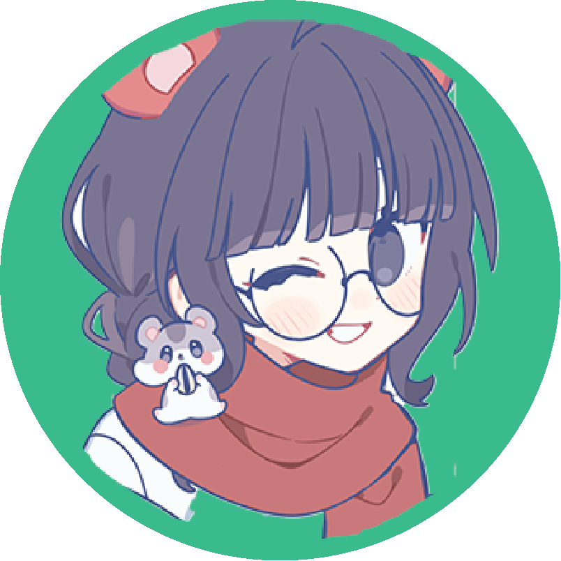

About us
About Blind Spots
Fake news, manipulated videos, electronic interference in elections, and the ever-present question: can we still trust the news? On one hand, we are deeply interested in politics, but on the other, we often find ourselves doubting what to believe. This uncertainty left us feeling powerless. The interest of voters and new voters in politics is gradually decreasing. Was our disengagement from politics a conscious decision? We do not think so. But if not, how did we end up here? These questions ignited our curiosity and became the starting point of this podcast. So, who are we?
Ceren
I like to be called also as Geronimo (please do not read g in Dutch :) Ever since i was a kid i have found politics very interesting, like a puzzle. I grew up in a country called the bridge between Asia and Europe, maybe that's why politics is like a puzzle. Now I am studying Communication and Multimedia Design in Amsterdam.
Scott
My name is Scott, and I study Communication and Multimedia Design at the HvA. I have been interested in politics and internet culture my whole life, and having conversations about them. Media can be quite polarizing now a days, I see this everyday, so providing information about issues online, and in the world makes me feel like I can help.
Kris
I am a student Communication and Multimedia Design in Amsterdam. Despite my knowledge of the internet and privacy online, I am often surprised to find biased content and have a hard time escaping my personal bubble. This sparked my interest in algorithms and how they influence us. It is important to me to help others like me find objective information so they can form their own opinions.